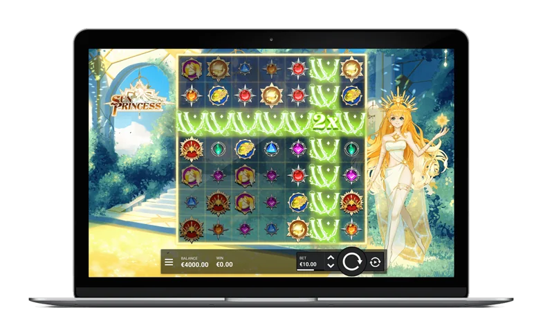

Sun Princess - RTP, Review & Where to Play

| Provider | Hacksaw Gaming |
|---|---|
| Game type | Video slot |
| Theme | Sun goddess, mythical palace garden |
| Win type | Cluster wins (grid size not stated on the official game page) |
| RTP | Not stated on the official game page - check the in-game info |
| Volatility | Not stated on the official game page |
| Max win | Not stated on the official game page |
| Mobile | Yes |
Overview
Sun Princess from Hacksaw Gaming puts a sun goddess beside the grid in a palace garden. The design leans anime: gold dominates the palette, the princess radiates light from the side of the grid, and sun-like symbols carry the theme through every spin. Wins come from clusters of matching symbols, not paylines.
The signature mechanic is the Sun Ray Frame. At the start of a spin, a frame can land on a low-paying, high-paying or Wild symbol, then activate once the spin's wins are handled. It spreads in straight lines from that symbol, turning every symbol along the lines into the same type, and new clusters pay out from the result. A frame spreads in two directions (vertical or horizontal) or in all four, depending on which frame lands. When a ray crosses a Wild, that Wild gains an additive 2x multiplier, growing by 2x each time it is hit again, and all Wild multipliers on the win are added together.
Land a Sun Ray Frame on a second symbol of the same type and a Chain Reaction starts: a new frame appears on that symbol and spreads again, and the chain can keep going until the grid fills. Only one frame can land at the start of a spin, and frames never land on FS symbols.
Free spins come in three tiers, all worth 10 spins, decided by how many FS symbols land at once. Three open Solaris Grove, where Sun Ray Frames land more often. Four open Sunfire Palace, which adds sticky Wild multipliers: any Wild a ray crosses keeps its multiplier on the grid until the bonus ends. Five open the hidden epic bonus, Golden Eclipse, with at least one Sun Ray Frame guaranteed on every spin. Extra FS symbols during a bonus add spins: two award 2 more, three award 4 more.
What this page does not claim: Hacksaw's official Sun Princess page publishes no release date, grid size, RTP, volatility rating, maximum win or bet range for this game, so none appear above. Check the game info or paytable inside the game at your casino for those figures. Like all Hacksaw Gaming releases, the game runs in the browser on phones and tablets with no download needed.
Where to Play Sun Princess
Sun Princess is available at online casinos that carry Hacksaw Gaming games. Start with our reviewed toplists:
Sun Princess FAQ
How do Sun Ray Frames work in Sun Princess?
A Sun Ray Frame lands on a low-paying, high-paying or Wild symbol at the start of a spin and activates after the spin's wins are handled. It spreads in straight lines from that symbol and turns all symbols along the lines into the same type, paying out from the new clusters. If it crosses a Wild, that Wild gains an additive 2x multiplier that grows by 2x on every further hit.
What are the three bonus games in Sun Princess?
Three FS symbols award 10 free spins in Solaris Grove, where Sun Ray Frames land more often. Four award 10 free spins in Sunfire Palace, where Wild multipliers hit by a ray become sticky until the bonus ends. Five award 10 free spins in the hidden epic bonus Golden Eclipse, with at least one Sun Ray Frame guaranteed on every spin.
Does Sun Princess publish an RTP or a maximum win?
No. Hacksaw Gaming's official Sun Princess page does not state an RTP, a volatility rating, a maximum win, a bet range, a grid size or a release date. Check the game info or paytable inside the game where you play for those figures.
Does Sun Princess work on mobile?
Yes. Like all Hacksaw Gaming releases, Sun Princess runs in the browser on phones and tablets, with no download needed.